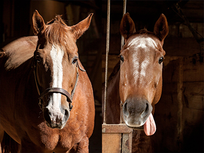

A complete horse training & boarding facility

Ride year round, regardless of the weather, in our indoor arena.

Enjoy easy access to miles of trails at East Fork State Park.

We offer several board and training packages to fit a variety of needs and budgets.
Find Us!
Green Pasture Stable and Training
1252 Green Pasture Rd
Amelia, Ohio 45102
888-555-0751 888-555-0751
1252 Green Pasture Rd
Amelia, Ohio 45102
888-555-0751 888-555-0751